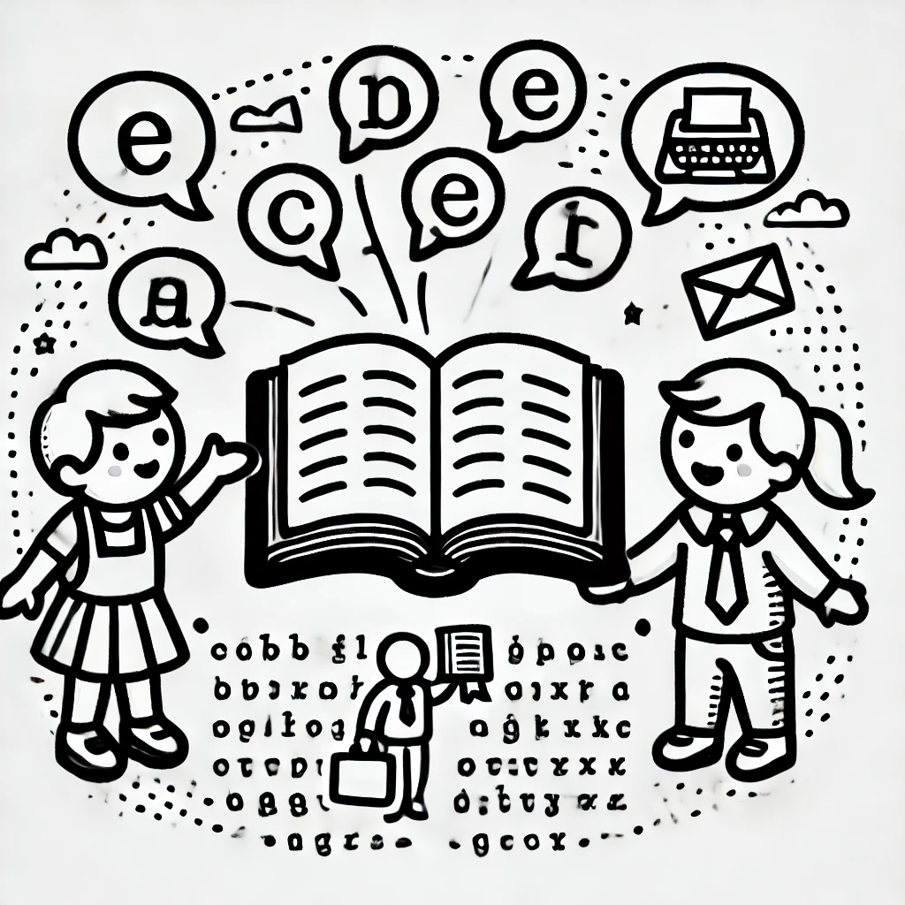
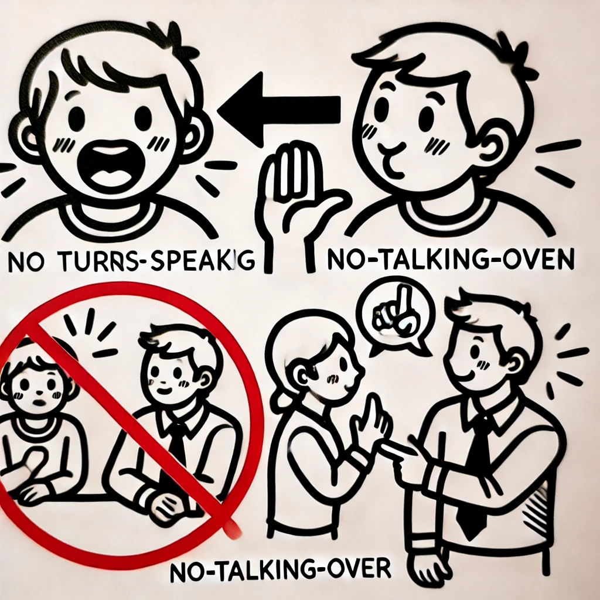
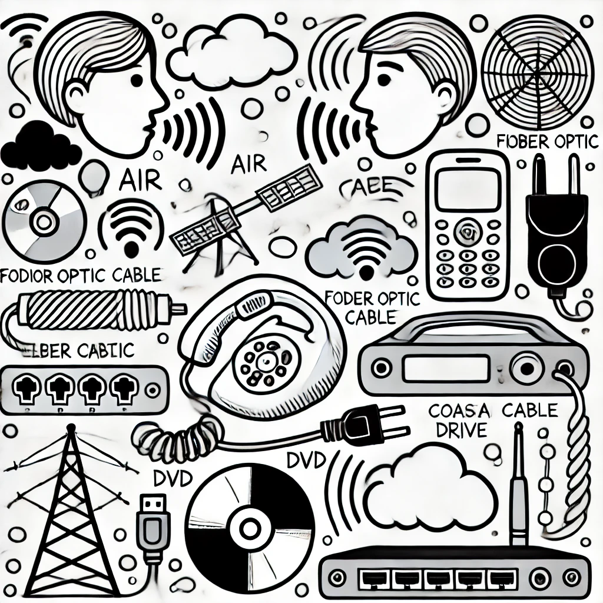
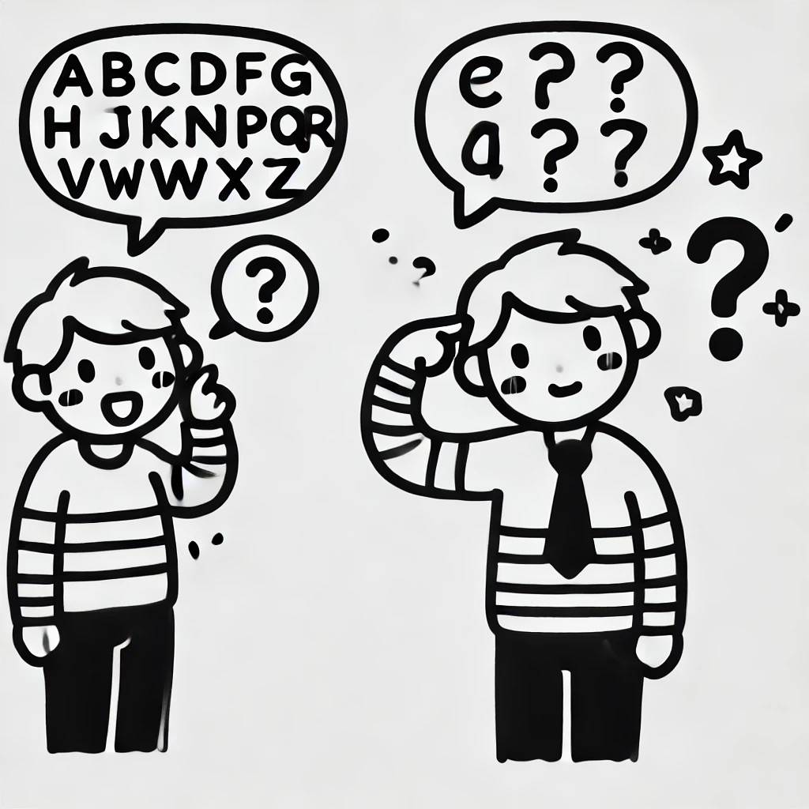
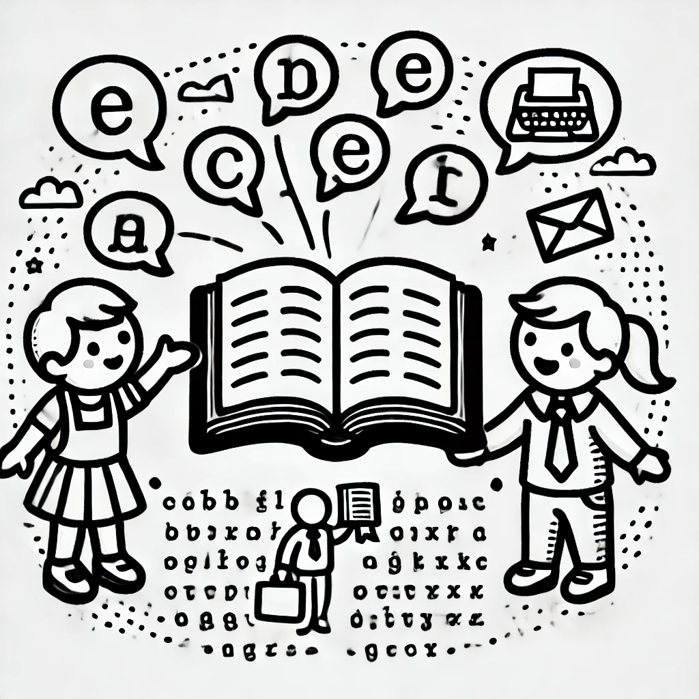
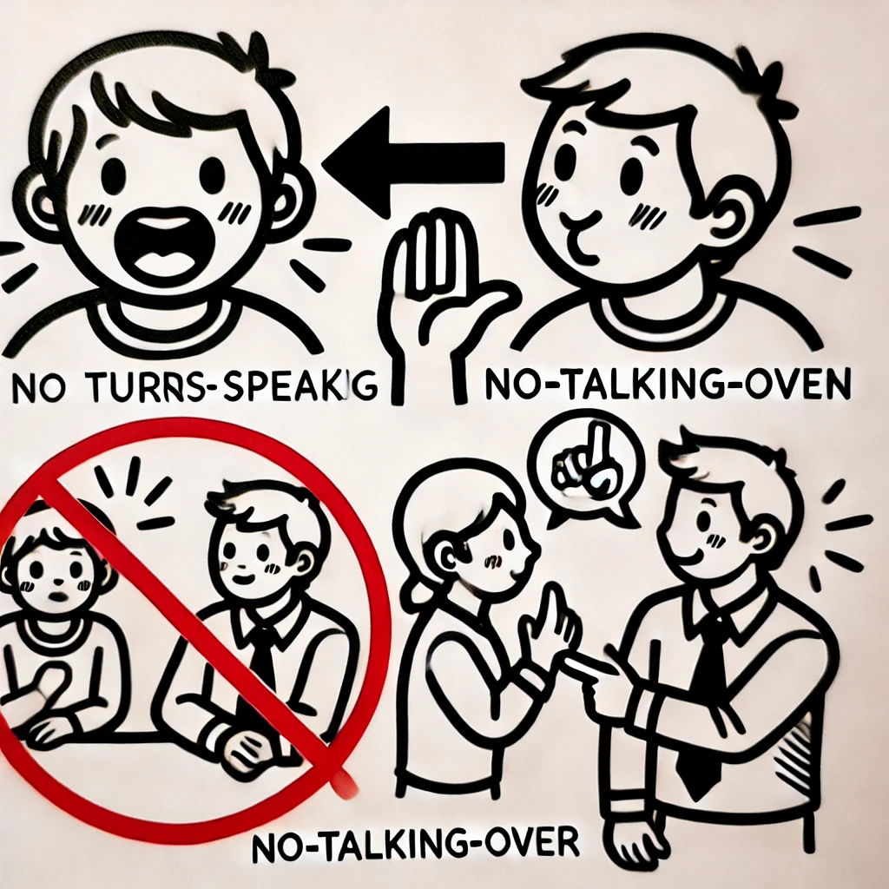
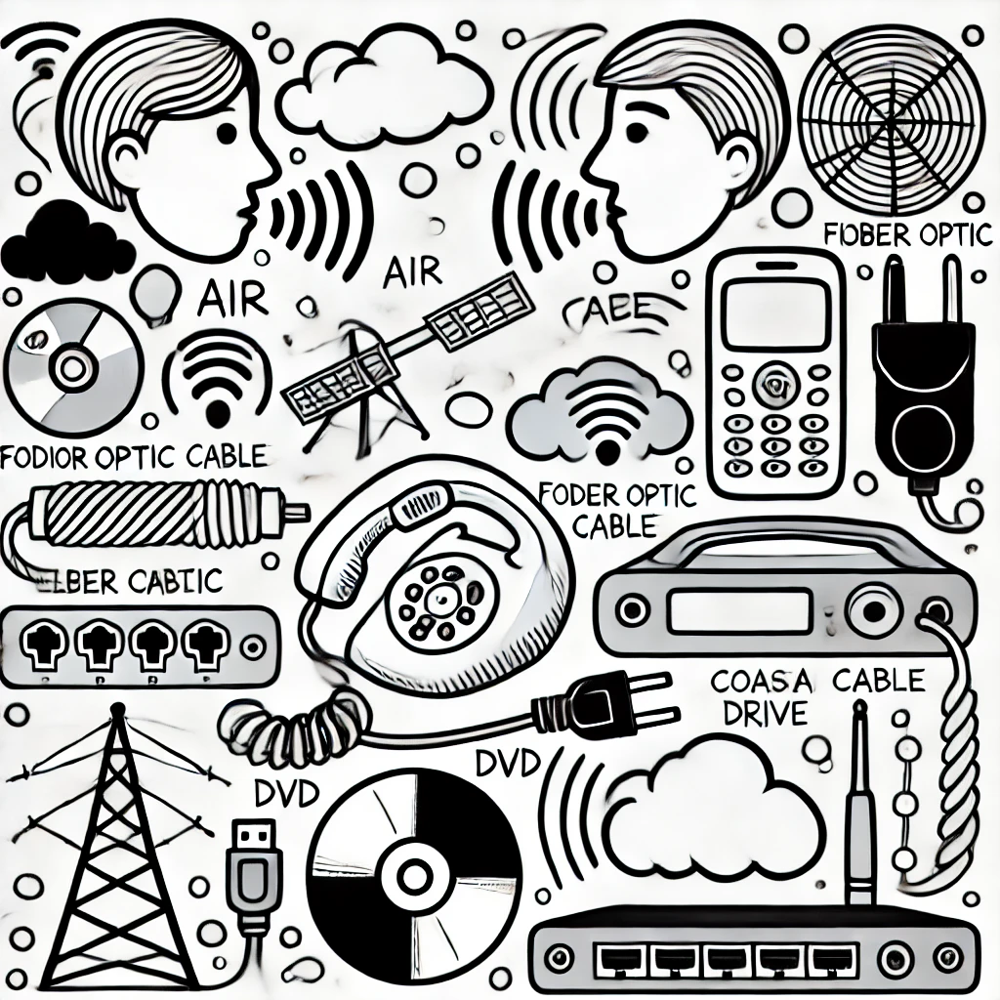
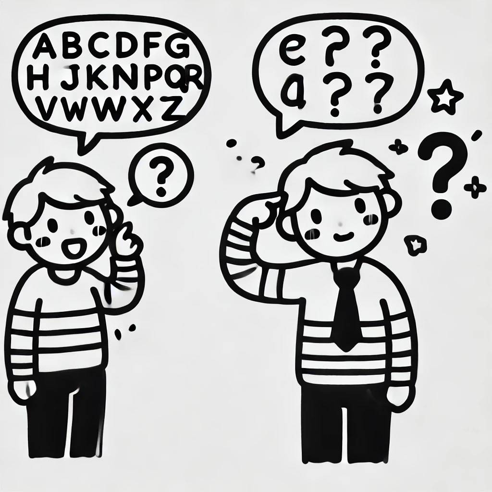

I soggetti: le persone che colloquiano hanno i ruoli di mittente o trasmittente e destinatario o ricevente.
La Comunicazione
Per capire la comunicazione tra due persone si possono individuare i seguenti elementi:
Il messaggio: l'informazione che si vuole trasmettere.
Il linguaggio: entrambi gli interlocutori devono parlare la stessa lingua.


Le regole da seguire: stabiliscono le modalità della comunicazione e gli eventuali errori da correggere.
Il mezzo trasmissivo: il supporto fisico attraverso il quale il segnale si propaga.


La correzione di Errori: Ripetere il messaggio se non è stato capito bene
La Comunicazione a Distanza
La comunicazione a distanza tra persone usando dispositivi o infrastrutture si chiama telecomunicazione. Con l'informatica, questa è diventata telematica, che trasmette dati, testi, suoni e immagini.
La Telematica
La telematica usa la tecnologia informatica per trasmettere informazioni a distanza tramite telecomunicazioni.
Il messaggio: l'informazione che si vuole trasmettere.
Il linguaggio: entrambi gli interlocutori devono parlare la stessa lingua.


Le regole da seguire: stabiliscono le modalità della comunicazione e gli eventuali errori da correggere.
Il mezzo trasmissivo: il supporto fisico attraverso il quale il segnale si propaga.


La correzione di Errori: Ripetere il messaggio se non è stato capito bene
La Comunicazione a Distanza
La comunicazione a distanza tra persone usando dispositivi o infrastrutture si chiama telecomunicazione. Con l'informatica, questa è diventata telematica, che trasmette dati, testi, suoni e immagini.
La Telematica
La telematica usa la tecnologia informatica per trasmettere informazioni a distanza tramite telecomunicazioni.